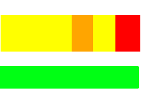
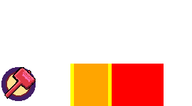

- press the left and right buttons(keyboard left/right if Desktop) to attack
- when punch icon is in the yellow meter during attack, it results a hit
- when in the orange meter this results in a critical hit
- when in the red player suffers a penality
- Note: different color punch icons require more hits unless critical hit has been invoked
- Note: a critical hit adds 10 combo points

- the more attacks you use and the more penalties you recieve the lower your staminia
- a lower stamina effects your hit gauge
- if your stamina is depleted upon reciving a penality you'll lose a heart
- if all hearts are depleted round will restart with losing score points
Boss Challange

- during the boss fight, dodge incoming attacks using left button
- use right button to attack the boss
- if dodge is too early (Miss) you'll recieve a pentalty
- a successful dodge is indicated by a green hammer icon and bypasses penalty
- Note: your stamina will effect the gauge concerning dodge
- Note: the gauge concerning attacks is not affected by the stamina and also shows Boss hitpoints